This post is a work in progress and may be updated or expanded soon!
This post is a work in progress and is a separation of Monte Carlo Path Tracing from the original *Monte Carlo Path Tracing* post. The content is still being written and may contain inaccuracies or incomplete sections. Please check back later for the finalized version!
The idea behind differentiable rendering is to compute gradients of the rendering process with respect to scene parameters, such as geometry, materials, and lighting. Having access to these gradients can allow us to pose rendering as an optimization problem, where we can optimize those parameters to minimize some loss function (like MSE between the render and ground truth image). This is useful when we want to reconstruct or match a scene from images, optimize geometry for some task, etc.
But before we look at Differentiable Rendering, let’s look at methods to calculate derivatives of a function. I will assume prior knowledge of Physically Based Rendering (PBR) and the rendering equation, so I won’t go into details of those topics here. I have a post for that if interested.
The simple gradient computation method is finite differences (FD). It numerically approximates the derivative of a scalar function $f:\mathbb{R}^n \to \mathbb{R}$ at a point $x$ as:
$$
f'(x) \approx \frac{f(x + h) - f(x)}{h}
$$
where $h$ is a small step size. A commonly used variant is the central difference method, which provides a better approximation:
where $K(t)$ is a kernel function that represents the blurring effect of the finite difference approximation.
This blurring can cause the finite difference method to produce inaccurate gradients, especially when the function $f$ has high-frequency components or is not smooth. This effect becomes negligible as $h$ approaches zero. By progressively reducing the step size $h$ one can construct an unbiased gradient estimator, but this comes at significant cost of evaluating the FD estimator many times.
It is straightforward to apply finite differences to a renderer by generating the image once with the original and once with the perturbed parameter. When using a Monte Carlo renderer, the evaluation of $f$ will be noisy. If $f(x + h)$ and $f(x)$ are evaluated independently, the FD estimator requires an enormous number of Monte Carlo samples to converge. The issue can easily be resolved by using the same random number generator seed for both evaluations. The correlation of the two estimators then causes a significant part of the variance to cancel out.
Fundamentally, the main problem of the finite differences is that they cannot scale to functions with many input parameters. For inverse rendering, we would need to render the image twice for each parameter ($f(x_1, ..., x_i, ...)$ and $f(x_1, ..., x_i + h, ...)$). This is completely impractical for most real use cases. An alternative is simultaneous perturbation, which is a stochastic estimator that estimates high-dimensional gradients by simultaneously offsetting all parameters.
For $f: \mathbb{R}^n \to \mathbb{R}$, the simultaneous perturbation method estimates the gradient as:
$$
\partial f(x) \approx \frac{f(x + h \cdot \Delta) - f(x - h \cdot \Delta)}{2h} \cdot \Delta^{-1}
$$
where $\Delta$ is a random perturbation vector with entries drawn from a symmetric distribution (e.g., Bernoulli or Gaussian). This method requires only two function evaluations, regardless of the dimensionality of the input space, making it much more efficient for high-dimensional problems. However, it can introduce additional variance into the gradient estimates, which may require careful tuning of the step size $h$ and the distribution of $\Delta$ to achieve good convergence, thus harming optimization performance. This and related derivative-free optimization methods cannot compete with gradient descent using the true infinitesimal gradient.
Instead of finite differences or analytic gradients, we typically want to use some form of automatic differentiation (AD). These methods compute gradients automatically by leveraging the chain rule to decompose the derivative of a computation into a Jacobian product:
where $J_g(f(\mathbf{x}))$ is the Jacobian of $g$ evaluated at $f(\mathbf{x})$, and $J_f(\mathbf{x})$ is the Jacobian of $f$ evaluated at $\mathbf{x}$.
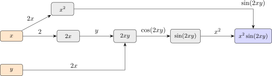
Figure 3.
Example computation graph corresponding to the expression $x^2 \operatorname{sin}(2xy)$. The edge weights are the derivative of the operation applied to the input node.
This principle enables scalable derivative computation that supports an arbitrary number of input variables. Automatic differentiation was initially introduced between the 1950s and 1970s, and then later gained significant traction thanks to its application to training neural networks. The following overview of AD discusses the basic principles and outlines some of the main constraints posed by the inverse rendering problem. A nice implementation of this concept by Andrej Karpathy can be found on YouTube here
Computation graphs. The central idea is to think of a given computation as a graph of operations. The individual operations are nodes and the derivatives of individual steps are assigned to the graph’s edges. For example, consider the following expression:
In a computer program, we could implement the evaluation of this expression as a sequence of steps:
a=2*xb=a*yc=sin(b)d=x*xe=x*d
The corresponding computation graph is shown in Fig. . The weight of the edge $a \rightarrow b$ between nodes $a$ and $b$ is the derivative $\partial b /\partial a$. An implementation of AD can compute these edge weights during the forward computation. The forward computation will henceforth also be referred to as primal computation. Many quantities used in the edge weights are redundant with the primal computations. The stored weights then allow to efficiently compute variable gradients. The stored graph of operations is sometimes also referred to as a tape or Wengert tape.
Forward-mode differentiation. A key choice in AD algorithms is the directionality of the gradient computation. The stored computation graph can be traversed either in forward or reverse direction. If the computation has a single differentiable input variable, but many outputs, it is efficient to evaluate gradients from the variable to the output in the forward direction. Mathematically, the differentiation turns into a series of Jacobian Vector Products (JVP). For a function $f: \mathbb{R}^n \to \mathbb{R}^m$, the forward-mode AD computes the output gradient $\partial_{\mathbf{y}}$ as the product of the Jacobian $\mathbf{J}_f$ with the input gradient $\partial_{\mathbf{x}}$:
Here and in the following, we use $\delta$ to denote the vectors that are inputs and output of the Jacobian products.
We can apply forward-mode AD to differentiate the output of Equation $\eqref{eq:forward-mode}$ with respect to the input variable $x$. We initialize the variable $\delta x = 1$ and then traverse the graph in Fig. from left to right, in each step multiplying the derivative value by the stored edge weights. The interactive simulation below traces this process step-by-step:
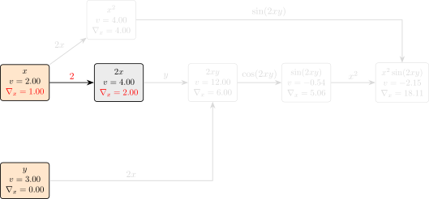
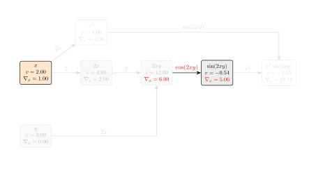
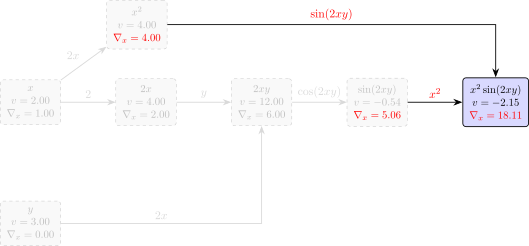
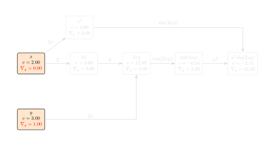
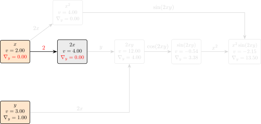
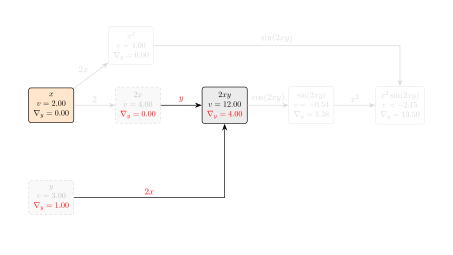
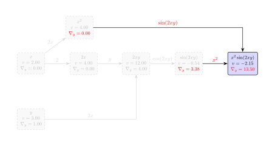
In the end, the variable $\delta e$ contains the desired gradient $\partial e / \partial x$. Using the computation graph, we can differentiate an arbitrary sequence of elementary operations, without explicitly computing and storing the full Jacobian matrix $\mathbf{J}_f$. The computational cost of forward-mode AD is proportional to the number of input variables, which makes it efficient for functions with a small number of inputs and many outputs.
Forward-mode differentiation can be formalized by using dual numbers. Similar to a complex number, a dual number $a + \epsilon b$ consists of a real part $a$ and a dual part $b$, where $\epsilon^2 = 0$. Hence, the product of two dual numbers is given by:
$$
(a + \epsilon b)(c + \epsilon d) = ac + \epsilon (ad + bc).
$$
For a function $f: \mathbb{R} \to \mathbb{R}$, we can use a Taylor expansion around $a$ to see that $f(a + \epsilon b) = f(a) + \epsilon b f'(a)$. All the higher-order terms contain a factor of $\epsilon^2$ and hence vanish. This means that the dual part of the result contains the desired derivative $b f'(a)$. By using dual numbers as inputs to a function, we can compute the function’s output and its derivative simultaneously. This is the basis of forward-mode AD.
The main issue with forward-mode differentiation is that the entire derivative computation needs to be carried out separately for each input variable. Similar to finite differences, this does not scale to the large number of input parameters for inverse rendering.
importmathclassDual:def__init__(self,real,dual):self.real=realself.dual=dualdef__add__(self,other):# Handle addition with a normal scalar numberother_real=other.realifisinstance(other,Dual)elseotherother_dual=other.dualifisinstance(other,Dual)else0.0returnDual(self.real+other_real,self.dual+other_dual)def__mul__(self,other):# Handle multiplication with a normal scalar numberother_real=other.realifisinstance(other,Dual)elseotherother_dual=other.dualifisinstance(other,Dual)else0.0# (a + eb) * (c + ed) = (ac) + e(ad + bc)real=self.real*other_realdual=self.real*other_dual+self.dual*other_realreturnDual(real,dual)def__rmul__(self,other):# Allows us to do 2 * Dual(...)returnself.__mul__(other)def__repr__(self):returnf"Dual(val={self.real:.4f}, grad={self.dual:.4f})"# We define a custom sine function using the dual number Taylor expansion:# sin(a + eb) = sin(a) + eb * cos(a)defdual_sin(x):ifisinstance(x,Dual):returnDual(math.sin(x.real),x.dual*math.cos(x.real))returnmath.sin(x)x=Dual(2.0,dual=1.0)# Seed the derivative here!y=Dual(3.0,dual=0.0)# The forward passa=2*xb=a*yc=dual_sin(b)d=x*xe=d*cprint("Result:",e)# Output: Result: Dual(val=-2.1463, grad=18.1062)
Reverse-mode differentiation. The solution to the scaling limitation of forward-mode is to traverse the computation graph in reverse order. Given a sequence of operations, reverse-mode AD starts by evaluating the chain rule for the last operation and proceeds toward the inputs. Mathematically, this evaluates vector-Jacobian products (VJP) from the output end of the computation. For a function $f$, it evaluates:
The primary advantage is that the gradient computation no longer needs to be duplicated for each input variable. We can simultaneously compute gradients with respect to both $x$ and $y$ at almost no extra cost. This evaluation order is identical to the backpropagation algorithm used in deep learning.
While conceptually simple, reverse-mode AD is generally more difficult to implement than forward-mode. Because it propagates gradients in the opposite order of the primal program, it requires storing the program state or edge weights of the computation graph in memory (often called a Wengert tape).
A naïve implementation that doesn’t store weights would require re-running the primal computation for every node, leading to quadratic complexity. Conversely, storing the entire graph can easily exceed system memory for complex simulations. The standard remedy is checkpointing, where the program state is only stored at a sparse set of points. Derivative terms are then recomputed locally between these checkpoints during the backward traversal. As we will see, even checkpointing is often insufficient for physically-based differentiable rendering, requiring more specialized solutions.
importmathclassVar:def__init__(self,val,_children=()):self.val=valself.grad=0.0# Store the edges of the DAGself._prev=set(_children)self._backward=lambda:Nonedef__mul__(self,other):other=otherifisinstance(other,Var)elseVar(other)# Pass (self, other) as children to the new output nodeout=Var(self.val*other.val,(self,other))def_backward():self.grad+=other.val*out.gradother.grad+=self.val*out.gradout._backward=_backwardreturnoutdef__rmul__(self,other):returnself*otherdefbackward(self):# 1. Topological sort using DFStopo=[]visited=set()defbuild_topo(v):ifvnotinvisited:visited.add(v)forchildinv._prev:build_topo(child)topo.append(v)build_topo(self)# 2. Seed the output gradientself.grad=1.0# 3. Apply chain rule to the sorted graph in reversefornodeinreversed(topo):node._backward()def__repr__(self):returnf"Var(val={self.val:.4f}, grad={self.grad:.4f})"defvar_sin(x):# Pass (x,) as the childout=Var(math.sin(x.val),(x,))def_backward():x.grad+=math.cos(x.val)*out.gradout._backward=_backwardreturnoutx=Var(2.0)y=Var(3.0)# Forward pass builds the DAG automatically in the backgrounda=2*xb=a*yc=var_sin(b)d=x*xe=d*c# A single call handles the DFS and the entire backward passe.backward()print("Result e:",e)print("Grad x:",x)print("Grad y:",y)# Output:# Result e: Var(val=-2.1463, grad=1.0000)# Grad x: Var(val=2.0000, grad=18.1062)# Grad y: Var(val=3.0000, grad=13.5016)
While Automatic Differentiation (AD) is a powerful tool for optimizing mathematical functions, it faces a fundamental challenge when applied to rendering. In many cases, symbolically differentiating a Monte Carlo estimator path tracer does not always work.
As stated in the SIGGRAPH 2020 course notes on Physically Based Differentiable Rendering:
“The problem arises when we try to differentiate an integral whose integrand is discontinuous, or when the sampling process depends on the parameters we are optimizing.”
However, this “Leibniz rule” (switching the order of differentiation and integration) is only valid when $f$ is continuous with respect to $p$. In rendering, this condition is frequently violated due to visibility—when an object moves, it creates a discontinuity (an edge) where the color jumps from one value to another.
A common pitfall in differentiable rendering is the inconsistent treatment of the sampling process and the PDF differentiation. To illustrate this, consider estimating the derivative of an integral over an infinite domain.
Return \(\partial(f/p)/\partial\lambda\)\(f\) and \(p\) both differentiated
Whether to differentiate the sampling and the pdf should be consistent!
What goes wrong in the biased case? Think of $\lambda$ as controlling the shape of the exponential distribution we sample from. When we draw $x \sim \text{Exp}[\lambda]$ and then ask “how does $f$ change with $\lambda$?”, we are only asking how the value of $f$ changes — completely ignoring the fact that the sample location $x$ itself shifts when $\lambda$ changes. It is like measuring how your shadow changes in length while pretending your body did not move. The consistent approach fixes this by reparameterizing: instead of sampling $x$ directly, we draw a raw uniform $\xi$ and transform it into $x = -\log(\xi)/\lambda$. Now $x$ explicitly depends on $\lambda$, so AD correctly accounts for both how $f$ changes and how the sample location moves.
Example 2: Discontinuities (The Visibility Problem)#
For discontinuous integrands, the fundamental challenge is that the derivative and the integral cannot simply be swapped. Standard Monte Carlo sampling “misses” the boundary contribution entirely.
What goes wrong? The function $f(x, p) = (x < p\ ?\ 1 : 0.5)$ is a step function — constant everywhere except at the single point $x = p$, where it jumps. Any random sample $X$ almost surely lands away from that jump, where the derivative with respect to $p$ is exactly zero. The gradient information lives entirely at the moving boundary $x = p$, which has probability zero of being hit. So our estimator confidently returns zero — every single time — while the true answer is $1/2$.
This is precisely the visibility problem in rendering: when a surface edge moves, the boundary between lit and shadowed regions shifts, but standard path tracing samples almost never land exactly on an edge. The gradient signal is invisible to naïve AD.
The Leibniz rule provides the formula for differentiating an integral whose limits, as well as its integrand, depend on a parameter $p$. For a 1D integral of the form $I(p) = \int_{a(p)}^{b(p)} f(x, p) dx$, the derivative is:
Figure 4.
Visual decomposition of the Leibniz Integral Rule into interior and boundary components.
Proof
We can derive the general Leibniz rule in two steps: first by assuming constant boundaries, and then generalizing to variable boundaries using the multivariable chain rule.
Figure 6.
The difference in the area by evaluating $f(t+\Delta t, x) - f(t, x)$ across the integration interval with change $\Delta t$.
Step 2: Cancel the original function terms
The “old” area $\int f dx$ cancels out with the negative term:
Figure 8.
The difference in area under curve changed with change in the variable $\Delta t$ with limits $a(t)$ and $b(t)$.
Step 2: Discard higher-order terms ($O(\Delta t^2)$)
Terms like $\int \frac{\partial f}{\partial t} \Delta t dx$ in the boundary segments (which have width $\approx \Delta t$) become $\Delta t^2$ and vanish:
$$\frac{\int_a^b f dx + {\color{#00d1b2}\int_a^b \frac{\partial f}{\partial t}\Delta t dx} - {\color{#ff6b6b}\int_a^{a + a'\Delta t} f dx} + {\color{#4facfe}\int_b^{b + b'\Delta t} f dx} - \int_a^b f dx}{\Delta t}$$
Step 3: Cancel original function and evaluate boundaries
Using the Fundamental Theorem of Calculus (or Mean Value Theorem), the boundary integrals become $f(t, a) a'\Delta t$ and $f(t, b) b'\Delta t$:
$$\frac{\cancel{\int_a^b f dx} + {\color{#00d1b2}\int_a^b \frac{\partial f}{\partial t}\Delta t dx} - {\color{#ff6b6b}f(t, a)a'\Delta t} + {\color{#4facfe}f(t, b)b'\Delta t} - \cancel{\int_a^b f dx}}{\Delta t}$$
In computer graphics, we deal with 2D images and 3D scenes. The 1D Leibniz rule generalizes to
higher dimensions via the Reynolds Transport Theorem. For an integral over a moving domain
$X(p)$ with a potentially discontinuous integrand, the derivative is:
$X(p)$ is the integration domain, which moves as $p$ changes.
$\Gamma(p)$ is the full boundary — the union of the external boundary $\partial X(p)$ and
any internal surfaces where $f$ is discontinuous (e.g. silhouette edges of objects).
$\mathbf{n}$ is the outward-facing unit normal at each point on $\Gamma$.
$\partial_p \mathbf{x}$ is the velocity of the boundary — how fast each boundary point moves
as $p$ changes.
$\Delta f(\mathbf{x}, p) = f^-(\mathbf{x}) - f^+(\mathbf{x})$ is the jump in $f$ across
$\Gamma$, where $f^-$ and $f^+$ are the one-sided limits approaching from each side along
$\mathbf{n}$.
Note that for points on $\Gamma$ where $f$ is actually continuous, $\Delta f = 0$ and they
contribute nothing to the boundary integral — so it is safe to include more boundary points than
strictly necessary. This matters in practice: when rendering, we do not always know in advance
which edges are true silhouettes, so we can include all triangle edges and let the $\Delta f$
term naturally zero out the non-contributing ones.
This is the key formula for differentiable rendering. It tells us that to get the correct gradient,
we must supplement our standard interior integration (ordinary path tracing, differentiated) with a
boundary sampling pass that explicitly integrates over the silhouette edges of objects — the
locations where the rendered color jumps as geometry moves.
Continuing Example 2, let’s see how this
resolves the failure of naïve AD. The function is:
$$
I(p) = \int_0^1 f(x, p)\, dx, \quad \text{where } f(x, p) = \begin{cases} 1 & \text{if } x < p \\ 0.5 & \text{if } x > p \end{cases}
$$
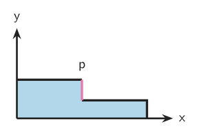
Figure 9.
Visualization of the step function $f(x, p)$ with a discontinuity at $x = p$.
The discontinuity is at $x = p$, so $\Gamma = \{p\}$, $\langle \partial_p x, \mathbf{n} \rangle = 1$,
and the jump is $\Delta f = f^-(p) - f^+(p) = 1 - 0.5 = 0.5$. Applying the 1D Leibniz rule:
This matches the analytic derivative of $I(p) = 0.5p + 0.5$, confirming $\frac{dI}{dp} = 0.5$.
Unlike naïve AD — which returns zero by only seeing the interior term — the Leibniz rule correctly
captures the contribution of the moving discontinuity by explicitly accounting for the jump
$\Delta f$ at the boundary.
In this section, we will work on a simplified problem with rendering two $2D$ triangles with constant colors. The two triangles can occlude each other. In this case our scene parameters are the 6 triangle vertices ($12$ numbers) and the colors of 2 triangles ($6$ real numbers).. Given these 18 total numbers as a vector $\mathbf{\pi}$, where we denote the vertices parameters as $\mathbf{\pi}_v$ and color parameters as $\mathbf{\pi}_c$, we want to generate an image $I(\pi)$ and compute a loss function $\mathcal{L}(I(\pi))$ (e.g., comparing the image with a target, or feeding the image to a neural network classifier). Our goal is to compute the gradient $\nabla_{\pi} \mathcal{L}(I(\pi))$ so that we can minimize the loss using gradient-based optimization.
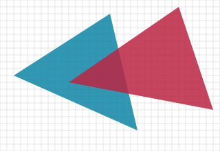
Figure 10.
The image of the triangles with constant colors (or at least how the imaging function $m(x, y; \mathbf{\pi})$ looks)
Before we talk about gradients, we need to discuss how the image $I$ is defined. How do we generate an image from two triangles? We can imagine that the two triangles define an underlying imaging function $m(x, y; \mathbf{\pi})$ that maps continuous $2D$ coordinates $(x, y)$ to a RGB color, depending on which triangle coordinate hits. However, an image is a discrete 2D grid. How do we go from the imaging function $m$ to the image $I$? A naive approach is to evaluate the $m$ at the center of the pixel. This approach is prone to aliasing which causes issues including jagged edges, temporal flickering, Moire patterns, etc and breaking up fine details.
Figure 11.
The image formed when imaging function $m(x, y; \mathbf{\pi})$ is evaluated only at the center. We can see the aliasing artifact (jagged edges)
From the signal processing perspective, we are sampling this 2D domain with a discrete image, where the sampling rate is determined by the imaging function. Since the image function $m$ is discontinuous, it has energy at all frequencies and is not bandlimited. Therefore, as long as we are evaluating at the center of the pixels, we will suffer from the aliasing problem no matter how large we select the resolution. To resolve the aliasing issue, we need to remove the high-frequency energy from the imaging function $m$. This is done by convolving the imaging function with a low-pass filter. For each pixel $I_i$, we evaluate an integral centered around the pixel center $(x_i, y_i)$:
where $k(x, y)$ is the kernel (or filter) and $f(x, y; \mathbf{\pi}) = k(x, y)m(x_i, + x, y_i + y; \mathbf{\pi})$ is the rendering integrand.
Intuitively, to remove the artifacts introduced by aliasing, instead of only sampling the center at each pixel, we evaluate the weighted average color over an area.
Figure 12.
The image formed when imaging function $m(x, y; \mathbf{\pi})$ is evaluated only at the center. We can see the aliasing artifact (jagged edges)
The selection of $k$ is not something we will discuss but PBRT book has a section on this.
Most renderers, whether real-time, offline, physics-based, differentiable or not, need to deal with the aliasing issue. Most of them solve the anti-aliasing integral using numerical solution by evaluating the imaging function at various locations, a process often called discretization:
where $(x_j, y_j)$ are various sampling locations within the $i$-th pixel. The naive approach of evaluating at pixel center can also be seen as a (poor) approximation to the integral by setting $N = 1$ and $x_0 = y_0 = 0.5$.
We say a discretization is consistent if the discretization converges to the integral, i.e., $lim_{N\rightarrow \infty} \frac{1}{N} \sum_{j=1}^N f(x_j, y_j; \mathbf{\pi}) = I_i$. The choice of the sample $x_j, y_j$ does not need to be stochastic. Nevertheless, if we are randomly sampling $x_j, y_j$ using the probabilistic distribution, we say a discretization is unbiased if the expectation is the same as the integral, i.e., $\mathbb{E}[f(x_j, y_j)] = I_i$.
In fact the integrals do not just come under the case of aliasing but we can model motion blur as an integration over time during the camera shutter is open, defocus blur for non-pinhole cameras as an integration over the aperture area. Given an area light, we compute the radiance that goes from the light source to the camera by integrating over the area of the light source. Kajiya showed that we can model global illumination as an recursive integral, by integrating each 3D point in the scene recursively.
Remember that our goal is to compute the gradient of the image $I$ that contains the two triangles, over some scalar loss function $L$, that is, $\nabla_{\pi} \mathcal{L}(\mathbf{I}(\mathbf{\pi}))$. Using the chain rule, we know that for each component $\pi \in \mathbb{R}$ in the parameter vector $\mathbf{\pi}$:
where $\frac{\partial \mathcal{L}}{\partial I_i}$ is the partial derivative of the loss function with respect to the $i$-th pixel, and $\frac{\partial I_i}{\partial \mathbf{\pi}}$ is the partial derivative of the $i$-th pixel with respect to the parameters. To be more concrete, if our loss function is the sum of pixel-wise squared difference with another target image $\hat{I}$, that is,
where $\nabla_{\pi} I_i(\mathbf{\pi})$ is the partial derivative of the $i$-th pixel with respect to the parameters. Now we want to compute the derivative of a pixel color with respect to the scene parameters $\mathbf{\pi}$.
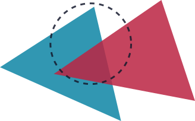
Figure 13.
Triangles with the dotted circle for the pixel support. We want to compute the derivative of the pixel color with respect to the triangle vertex positions.
A common misconception of the non-differentiability of rendering is that the derivative $\partial I_i (\mathbf{\pi}) / \partial \pi$ is discontinuous and not differentiable. However, recall that $I_i$ is an integral that evaluates the average color within the filter support. Therefore, the movement of the triangle vertices will in fact lead to continuous and differentiable changes to the average color. The integrand of rendering is discontinuous and not differentiable, but the integral is actually differentiable! Importantly, we did not make rendering an integration problem to make it differentiable. Instead, rendering is an integration problem in the first place. All the approaches in any rendering methods, real-time or offline, are different approximations or discretizations of the rendering integral.
How do we compute the derivatives of an integral? Recall that we wanted to compute the integral numerically (Equation $\eqref{eq:discretization}$). Unfortunately, we cannot just automatically differentiate the numerical integrator as we saw in the Example 2. For the vertex position parameters, the numerical integrator will always evaluate to 0.
Figure 14.
Sampling at yellow points will give 0 derivative as there is no local change around that point. But we can see that changing the position of blue triangle will change the average color of pixel and that change is continuous.
However, the derivative of the integral with respect to a vertex position parameter $\mathbf{\pi}_v$ is not 0.
In general, the discretization and the gradient operator do not commute for discontinuous integrands. This is because the derivatives are measuring local changes, and the uniform discretization has zero chance of detecting the local changes around discontinuities (the sample will need to be on the edge which has probability 0). We can take a look at the Example 2 to see that we need to explicitly sample at the boundary to detect the change.
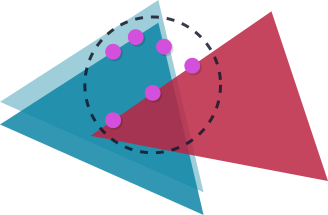
Figure 15.
Purple points represent sampling explicitly at the edges. This will capture the change in the pixel and thus will give us correct gradient
In general, we will need to evaluate Reynold’s Transport Theorem (Equation $\eqref{reynolds-transport-theorem}$) for this problem:
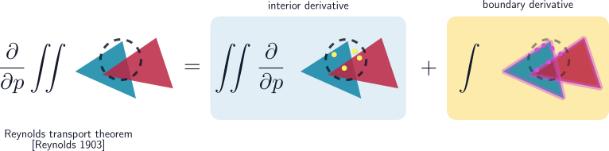
Figure 16.
The Reynolds Transport Theorem decomposed into interior and boundary derivatives.
To intuitively understand the boundary derivative, we can visualize it as calculating the volume of an infinitesimal boundary wedge created by the movement of an edge.
For every point on a silhouette edge, as the parameter $p$ changes, the edge sweeps out a small parallelogram. The boundary integral accumulates these infinitesimal volumes along the entire discontinuity contour.
We can decompose the integrand into three intuitive geometric components:
Height ($f_- - f_+$): The difference in pixel color (or radiance) between the two sides of the edge (e.g., transitioning from the occluded blue background to the moving red foreground).
Width ($n \cdot v$): The distance the edge moves, projected along the normal direction $n$. Movement parallel to the edge simply slides along the boundary and doesn’t change the area; only perpendicular movement contributes to the derivative!
Length ($dt$ or $d\pi$): The differential line segment along the boundary contour itself.
which can also be approximated with Monte Carlo sampling.
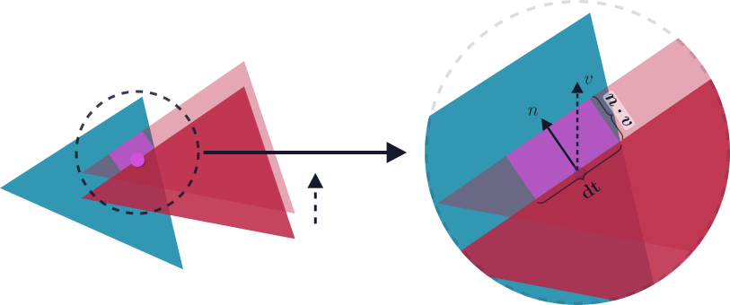
Figure 17.
The Infinitesimal Boundary Volume. For each point on the boundary, we compute its 2D movement $v$ with respect to the differentiating parameter. This movement is projected onto the normal direction $n$ to yield the normal movement speed $n \cdot v$. This projection accounts for the infinitesimal width of the swept area, allowing us to properly measure the infinitesimal area changes at the boundary. Multiplying this projected width by the differential edge segment $dt$ (length) and the color jump (height) calculates the exact boundary derivative contribution.
The following code is adapted from SIGGRAPH 2020 Course.
importnumpyasnpclassTriangleMesh:def__init__(self,vertices,indices,colors):self.vertices=np.array(vertices,dtype=np.float64)# (N, 2) verticesself.indices=np.array(indices,dtype=np.int32)# (M, 3) face indicesself.colors=np.array(colors,dtype=np.float64)# (M, 3) per-face RGBdefraytrace(mesh,pos):"""
Uses the half-plane test: a point is inside a triangle if it's
on the same side of all three edges.
"""foriinrange(len(mesh.indices)):# Extract the current triangleidx=mesh.indices[i]v0,v1,v2=mesh.vertices[idx[0]],mesh.vertices[idx[1]],mesh.vertices[idx[2]]# Edge normals (2D perpendicular: normal of (dx,dy) = (-dy, dx))defnormal_2d(v):returnnp.array([-v[1],v[0]])# Get edge normals for all edges of trianglesn01=normal_2d(v1-v0)n12=normal_2d(v2-v1)n20=normal_2d(v0-v2)# Find in which side pos is for each edge side01=np.dot(pos-v0,n01)>0side12=np.dot(pos-v1,n12)>0side20=np.dot(pos-v2,n20)>0# if it is on same side for all edges, then it is inside (since this is 2D)if(side01andside12andside20)or(notside01andnotside12andnotside20):returnmesh.colors[i],ireturnnp.array([0.0,0.0,0.0]),-1# backgrounddefrender(mesh,h,w,spp=4):"""
Forward pass: render the mesh into an image.
"""img=np.zeros((h,w,3))# setup the (H, W, 3) buffer for RGB imagesqrt_spp=int(np.sqrt(spp))# grid cells for stratified sampling# For each pixelforyinrange(h):forxinrange(w):# for each grid cellfordyinrange(sqrt_spp):fordxinrange(sqrt_spp):# Offset the position within the pixelxoff=(dx+np.random.rand())/sqrt_sppyoff=(dy+np.random.rand())/sqrt_spp# compute the color at that positionpos=np.array([x+xoff,y+yoff])color,_=raytrace(mesh,pos)img[y,x]+=color/sppreturnimgdefcompute_interior_derivatives(mesh,adjoint,spp=4):"""
Interior derivatives: ∂Loss/∂color.
Standard AD works here because color changes are continuous.
"""img_h,img_w=adjoint.shape[:2]sqrt_spp=int(np.sqrt(spp))d_colors=np.zeros_like(mesh.colors)# For each pixelforyinrange(img_h):forxinrange(img_w):# For each grid cellfordyinrange(sqrt_spp):fordxinrange(sqrt_spp):# Find the position within the cell within pixelxoff=(dx+np.random.rand())/sqrt_sppyoff=(dy+np.random.rand())/sqrt_spp# compute the gradient at that positionpos=np.array([x+xoff,y+yoff])_,hit_idx=raytrace(mesh,pos)ifhit_idx>=0:d_colors[hit_idx]+=adjoint[y,x]/sppreturnd_colorsdefcollect_edges(mesh):"""Collect unique edges."""edges=set()# Stores edges as tuples (u, v)foridxinmesh.indices:edges.add((min(idx[0],idx[1]),max(idx[0],idx[1])))edges.add((min(idx[1],idx[2]),max(idx[1],idx[2])))edges.add((min(idx[2],idx[0]),max(idx[2],idx[0])))# [(u, v) ...]returnlist(edges)defbuild_edge_sampler(mesh,edges):"""Build CDF for importance-sampling edges by length."""lengths=[]# Store the lengths of the edgesforv0_id,v1_idinedges:lengths.append(np.linalg.norm(mesh.vertices[v1_id]-mesh.vertices[v0_id]))lengths=np.array(lengths)# Use the edge lengths as weight for PDF and construct CDFpmf=lengths/lengths.sum()cdf=np.concatenate([[0],np.cumsum(pmf)])returnpmf,cdf,lengthsdefcompute_edge_derivatives(mesh,adjoint,n_edge_samples=10000):"""∂Loss/∂vertices via Reynolds Transport Theorem."""# Extract unique edges and build CDF for samplingimg_h,img_w=adjoint.shape[:2]edges=collect_edges(mesh)pmf,cdf,lengths=build_edge_sampler(mesh,edges)d_vertices=np.zeros_like(mesh.vertices)screen_dx=np.zeros((img_h,img_w,3))screen_dy=np.zeros((img_h,img_w,3))foriinrange(n_edge_samples):# 1. Pick an edge (importance sampling by length)u=np.random.rand()edge_id=np.searchsorted(cdf,u,side='right')-1edge_id=np.clip(edge_id,0,len(edges)-1)u,v=edges[edge_id]# 2. Pick a point on the edgev0=mesh.vertices[u]v1=mesh.vertices[v]t=np.random.rand()# t in [0, 1]p=v0+t*(v1-v0)xi,yi=int(p[0]),int(p[1])ifxi<0oryi<0orxi>=img_woryi>=img_h:continue# 3. Sample both sides of the edge (the "jump" / discontinuity)edge_dir=(v1-v0)/np.linalg.norm(v1-v0)n=np.array([-edge_dir[1],edge_dir[0]])# outward normaleps=1e-3color_in,_=raytrace(mesh,p-eps*n)color_out,_=raytrace(mesh,p+eps*n)# 4. Compute gradient contribution (Reynolds Transport Theorem)pdf=pmf[edge_id]/lengths[edge_id]weight=1.0/(pdf*n_edge_samples)color_diff=color_in-color_out# the jump Δfadj=np.dot(color_diff,adjoint[yi,xi])# dp/dv0 = (1-t), dp/dv1 = t (from p = v0 + t*(v1-v0))d_v0=np.array([(1-t)*n[0],(1-t)*n[1]])*adj*weightd_v1=np.array([t*n[0],t*n[1]])*adj*weightd_vertices[u]+=d_v0d_vertices[v]+=d_v1# Screen-space derivativesscreen_dx[yi,xi]+=-n[0]*color_diff*weightscreen_dy[yi,xi]+=-n[1]*color_diff*weightreturnd_vertices,screen_dx,screen_dy# 1. Scene setupc_blue=[15/255,133/255,165/255]c_red=[187/255,37/255,66/255]scale=2.0mesh=TriangleMesh(vertices=np.array([# Tri 0 (Red)[10.0,12.0],[26.0,1.0],[31.0,16.0],# Tri 1 (Blue)[2.0,11.0],[16.0,2.0],[20.0,19.0],])*scale,indices=[[0,1,2],[3,4,5]],colors=[c_red,c_blue])# Window setupW,H,spp=70,45,4np.random.seed(48)# 2. Forward Passprint("Rendering...")img=render(mesh,H,W,spp)# 3. Backward Pass (Interior: ∂I/∂color)adjoint=np.ones((H,W,3))# Uniform adjoint to pull gradientsd_colors=compute_interior_derivatives(mesh,adjoint,spp)# 4. Backward Pass (Edges: ∂I/∂vertex via boundary sampling)d_verts,screen_dx,screen_dy=compute_edge_derivatives(mesh,adjoint,n_edge_samples=W*H)print("\nVertex Gradients (d_verts):")print(np.round(d_verts,4))# Output:# Vertex Gradients (d_verts):# [[ -4.2248 2.533 ]# [ 7.4785 -18.8305]# [ 13.7454 13.4763]# [-21.0542 4.3572]# [ 0.4232 -20.9386]# [ 2.0691 19.6481]]
The previous sections demonstrated how to differentiate the rendering integral with respect to geometry parameters using the Reynolds Transport Theorem. However, fully leveraging the power of physics-based differentiable rendering requires us to differentiate with respect to material parameters (e.g., albedo, roughness) and illumination parameters (e.g., position, intensity of light sources).